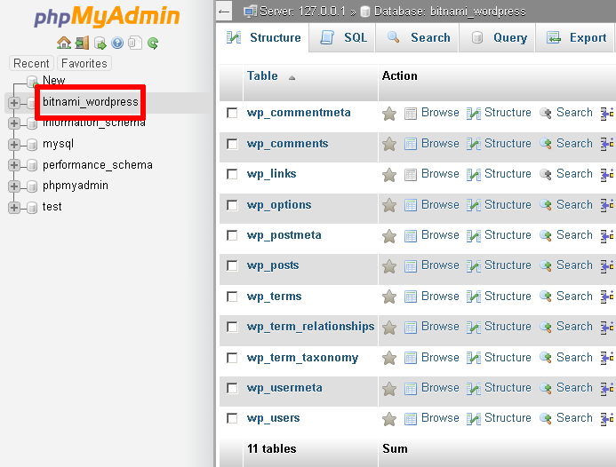
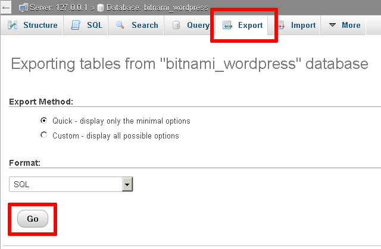
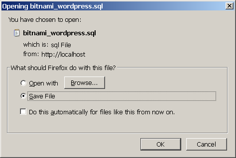
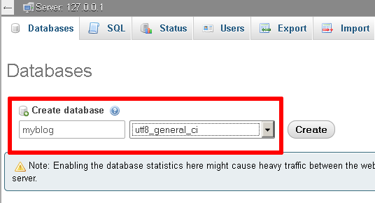
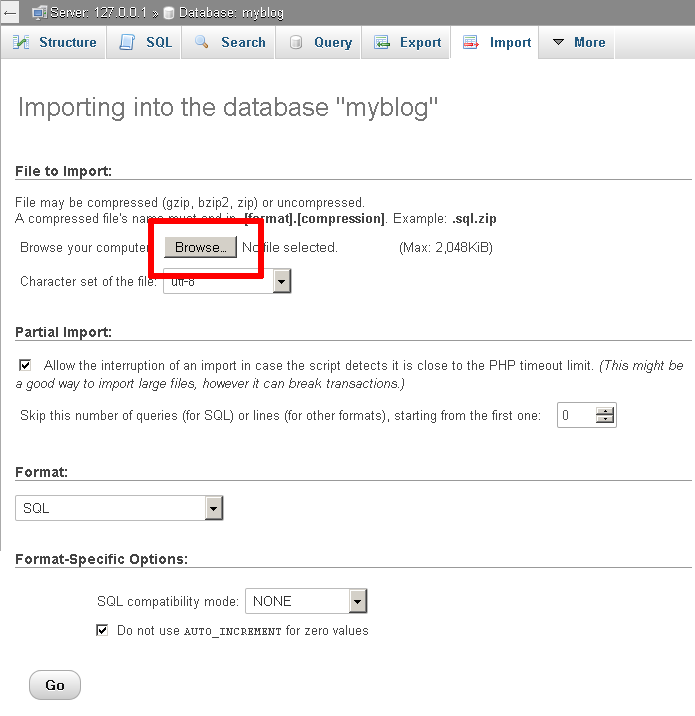
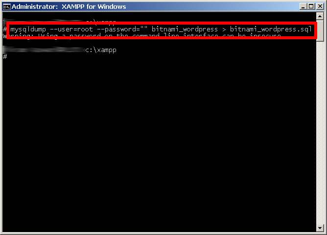
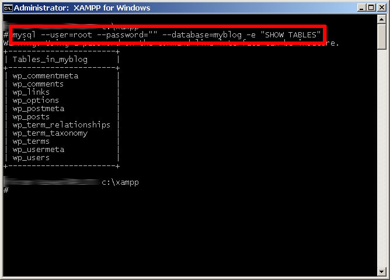

Using phpMyAdmin
XAMPP includes phpMyAdmin, a browser-based tool for managing MySQL/MariaDB databases. Follow these steps to backup a database:
- Browse to http://localhost/phpmyadmin and log in (default is root with no password).
- Select your database (e.g., bitnami_wordpress).
- Click "Export" in the top navigation.
- Select "Quick" export and "SQL" as the format, then click "Go" to download the backup file.


This will download a text file with SQL statements for your backup.

Restore with phpMyAdmin
- Browse to http://localhost/phpmyadmin and log in.
- Create a new database, e.g., myblog.
- Select the "Import" option and upload your backup file.
- Click "Go" to restore the database.


Using Command-Line Tools
You can also backup and restore using command-line tools:
Backup with mysqldump
mysqldump --user=root --password="" bitnami_wordpress > bitnami_wordpress.sqlThis exports the database to bitnami_wordpress.sql.

Restore from Command Line
mysql --user=root --password="" --database=myblog < bitnami_wordpress.sqlThis command restores your backup file to the myblog database.

Note: Adjust the file size limits for uploads in
php.ini if your database is large.